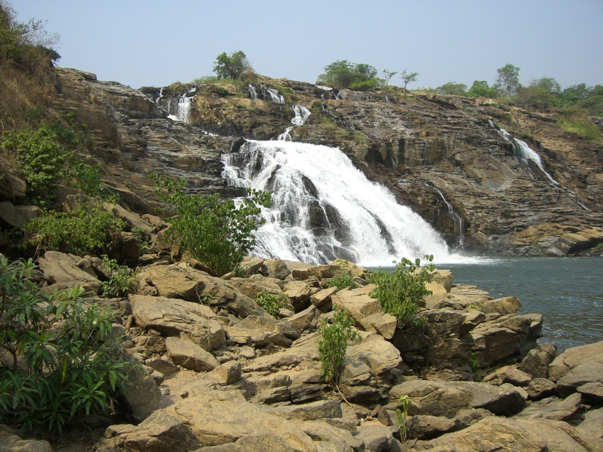
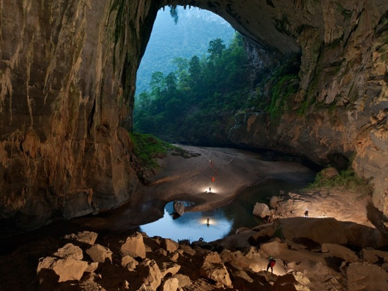

Nigeria is a country of over 220m people, it is a country of culture, heritage and diversity,every Nigerian
is proud of their cultural heritage.
Nigeria has natural resources in abundance in various part of the country.
some of the tourist attractions in Nigeria are;
- The Obudu mountain resort in cross river state.
- The olumo rock in ogun state.
- The naturally suspended iyake lake in Oyo state, the idanre hills.
- Ikagoosi warm spring in Ekiti state.
- Ogbunike cave, Anambra state.
Erin-Ijesha Waterfalls is located in Erin-Ijesha. It is a tourist attraction located in Oriade local government area, Osun State, Nigeria. The waterfalls were discovered in 1140 AD by one of the daughters of Oduduwa..

The Ikogosi Warm Springs is a tourist attraction located at Ikogosi, a town in Ekiti State, southwestern Nigeria. Flowing abreast the warm spring is another cold spring which meets the warm spring at a confluence, each maintaining its thermal properties. These attributes make the spring a tourist attraction in Nigeria.

Ogbunike Caves are situated in a valley with tropical rain forest behind the "Ogba" hills in which lies St. Monica College, Ogbunike. Descending into the valley where the caves are located is a lengthy walkway made up of about 317 steps said to have been constructed by the Anambra State Government in the mid 90s.